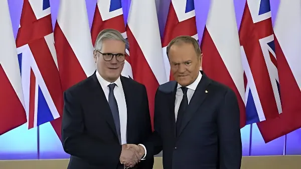

Le 27 mai 2026, les premiers ministres Keir Starmer et Donald Tusk ont signé au bunker de la Bataille d'Angleterre à RAF Northolt un traité de défense et de sécurité bilatéral désignant explicitement la Russie comme « la menace à long terme la plus significative » pour la sécurité euro-atlantique. Ce pacte historique, baptisé Traité de Northolt, couvre le développement conjoint de systèmes d'armement, la cybersécurité, le contre-espionnage et le renforcement du flanc oriental de l'OTAN.
La signature du Traité de Northolt intervient dans un contexte de profonde recomposition de l'architecture de sécurité européenne. Depuis l'invasion russe à grande échelle de l'Ukraine en 2022, les pays d'Europe centrale et orientale ont massivement augmenté leurs budgets de défense. La Pologne, qui consacre désormais plus de 4 % de son PIB à la défense — le taux le plus élevé de l'OTAN —, a fait de la dissuasion face à Moscou le cœur de sa politique étrangère.
Parallèlement, l'administration Trump a accentué la pression sur les Européens pour qu'ils prennent en charge une plus large part de leur propre sécurité, fragilisant la confiance dans les garanties automatiques de l'article 5 de l'OTAN. C'est dans ce contexte d'incertitude transatlantique que le Royaume-Uni a multiplié les traités bilatéraux : après la France en 2025 et l'Allemagne en juillet 2025, Londres scelle avec Varsovie le troisième pilier d'un réseau de défense européen tissé en dehors des structures formelles de l'Union européenne.
Le choix du lieu de signature n'est pas anodin. Le bunker de la Bataille d'Angleterre à RAF Northolt, dans l'ouest de Londres, est l'endroit même où la RAF coordonna ses opérations aériennes pendant l'été 1940. C'est depuis cette base que les pilotes du célèbre Dywizjon 303 — l'escadrille polonaise qui enregistra le taux de destruction le plus élevé de la Bataille d'Angleterre — décollaient pour affronter la Luftwaffe. Donald Tusk a lui-même voulu baptiser l'accord « Traité de Northolt » en hommage à ce passé commun.
Avant la cérémonie de signature, les deux premiers ministres ont visité ensemble la salle commémorative dédiée aux aviateurs polonais. Ce geste, hautement symbolique, ancre le nouveau partenariat dans une mémoire partagée de résistance face à l'agression extérieure — un message implicite adressé à Moscou.
Le document officiel identifie « la Fédération de Russie comme la menace à long terme la plus significative pour la sécurité [euro-atlantique] et la nécessité de contrer ses actions malveillantes ». Les deux gouvernements s'engagent à « contrer et dissuader l'agression et l'ingérence russes sous toutes leurs formes » et à « exercer une pression appropriée sur ceux qui facilitent les activités malveillantes et l'agression russes ».
Le traité prévoit également que les deux pays travailleront ensemble à tenir la Russie — « y compris ses dirigeants politiques et militaires » — responsable de ses violations du droit international. Cette formulation explicite va au-delà du langage diplomatique habituel et représente un signal politique fort à l'égard du Kremlin.
Sur le plan opérationnel, le Traité de Northolt prévoit le développement et la fabrication conjoints d'armements de nouvelle génération, avec un accent particulier sur la défense aérienne et antimissile. Les deux pays s'engagent à concevoir ensemble de nouveaux intercepteurs à moyenne portée, s'appuyant sur une coopération industrielle déjà mature : en 2024, la Pologne avait signé un contrat de 4 milliards de livres sterling pour l'acquisition de plus de 1 000 missiles surface-air CAMM-ER auprès du missilier MBDA.
L'accord prévoit en outre l'expansion des systèmes sans pilote pour renforcer le flanc oriental de l'OTAN, et le lancement d'exercices militaires conjoints à grande échelle focalisés sur la guerre anti-drones, la guerre électronique et le soutien au génie de combat. Ces exercices doivent intégrer des technologies dites « disruptives » afin d'améliorer l'interopérabilité entre les forces britanniques et polonaises.
Au-delà de la dimension militaire conventionnelle, une partie substantielle du traité est consacrée à la cybersécurité et à la lutte contre les ingérences hybrides russes. La Pologne, qui joue un rôle central de hub logistique pour l'aide militaire à l'Ukraine, est régulièrement ciblée par des cyberattaques, des opérations d'espionnage et des campagnes de désinformation russes. Donald Tusk avait souligné dès le matin du 27 mai, avant son départ pour Londres, que ce volet était « une partie significative » du traité.
Les deux pays s'engagent à mieux détecter et à répondre conjointement aux cyberattaques et aux campagnes d'information malveillantes. Un plan d'action conjoint sur la migration irrégulière fait également partie de l'accord, reflétant les préoccupations polonaises face aux opérations hybrides russes et biélorusses utilisant les flux migratoires comme instrument de déstabilisation aux frontières orientales de l'OTAN.
Invasion russe à grande échelle de l'Ukraine. La Pologne porte son budget de défense à plus de 4 % du PIB.
Pologne : contrat de 4 milliards de livres pour 1 000+ missiles CAMM-ER auprès de MBDA.
Signature du traité de défense Pologne–France.
Signature du traité de défense UK–Allemagne.
Signature du Traité de Northolt entre le Royaume-Uni et la Pologne au bunker de la Bataille d'Angleterre, RAF Northolt.
« La Pologne veut les relations diplomatiques les plus étroites possibles avec le Royaume-Uni, axées sur la défense contre la Russie. »
— Donald Tusk, Premier ministre polonais, 27 mai 2026 (Reuters)Le Traité de Northolt illustre la recomposition en profondeur du paysage sécuritaire européen depuis 2022. Face à une Russie désignée sans ambiguïté comme menace stratégique, et dans un contexte d'incertitudes sur la fiabilité de la garantie américaine, le Royaume-Uni et la Pologne choisissent de tisser des liens bilatéraux denses, ancrés dans l'histoire et tournés vers l'industrie de défense. Ce faisant, ils participent à l'émergence d'un réseau de dissuasion européenne qui n'attend plus d'être dicté par Washington — et dont le maillage progresse à un rythme que le sommet de l'OTAN prévu à Ankara en juillet 2026 devra nécessairement prendre en compte.
On 27 May 2026, Prime Ministers Keir Starmer and Donald Tusk signed a landmark bilateral defence and security treaty at the Battle of Britain Bunker at RAF Northolt, explicitly naming Russia as "the most significant long-term threat" to Euro-Atlantic security. The Northolt Treaty covers joint weapons development, cybersecurity, counter-espionage and the strengthening of NATO's eastern flank.
The signing of the Northolt Treaty comes against a backdrop of profound transformation in European security architecture. Since Russia's full-scale invasion of Ukraine in 2022, Central and Eastern European countries have dramatically increased their defence budgets. Poland, which now devotes more than 4% of its GDP to defence — the highest rate in NATO — has made deterrence against Moscow the centrepiece of its foreign policy.
At the same time, the Trump administration has piled pressure on European allies to take greater responsibility for their own security, shaking confidence in the automatic guarantees of NATO's Article 5. Against this backdrop of transatlantic uncertainty, the United Kingdom has multiplied bilateral defence treaties: after France in 2025 and Germany in July 2025, London now seals with Warsaw the third pillar of a European security network built outside the formal structures of the European Union.
The choice of venue was deliberate. The Battle of Britain Bunker at RAF Northolt, in west London, is where the RAF coordinated its fighter operations in the summer of 1940. It was from this base that the pilots of the famous Dywizjon 303 — the Polish squadron that recorded the highest kill rate of the Battle of Britain — took off to face the Luftwaffe. Donald Tusk himself chose to name the agreement the "Northolt Treaty" in tribute to that shared past.
Ahead of the signing ceremony, the two prime ministers visited the memorial room dedicated to the Polish airmen together. This highly symbolic gesture roots the new partnership in a shared memory of resistance against external aggression — an implicit message addressed to Moscow.
The official document identifies "the Russian Federation as the most significant long-term threat to [Euro-Atlantic] security and the need to counter its malign actions." Both governments commit to "countering and deterring Russian aggression and interference in all its forms" and to "applying appropriate pressure on the enablers of Russian malign activity and aggression."
The treaty also pledges that both countries will work to hold Russia — "including its political and military leadership" — accountable for violations of international law. This explicit formulation goes beyond typical diplomatic language and represents a strong political signal to the Kremlin.
On the operational side, the Northolt Treaty provides for the joint development and manufacture of next-generation weapons systems, with a particular focus on air and missile defence. The two countries commit to jointly designing new medium-range air defence interceptors, building on an already mature industrial relationship: in 2024, Poland signed a £4 billion procurement agreement for over 1,000 CAMM-ER surface-to-air missiles from European missile manufacturer MBDA.
The agreement also envisages the expansion of unmanned systems to reinforce NATO's Eastern Flank, and the launch of large-scale joint military exercises focused on counter-drone warfare, electronic warfare and engineering support. These exercises are to incorporate so-called disruptive technologies to improve interoperability between British and Polish forces.
Beyond conventional military cooperation, a substantial part of the treaty addresses cybersecurity and the fight against Russian hybrid interference. Poland, which serves as a central logistics hub for military aid to Ukraine, is regularly targeted by Russian cyberattacks, espionage operations, and disinformation campaigns. Tusk had underlined on the morning of 27 May, before departing for London, that this dimension formed "a significant part" of the treaty.
Both countries commit to better detecting and jointly responding to cyberattacks and malign information campaigns. A joint action plan on irregular migration also forms part of the agreement, reflecting Polish concerns about Russian and Belarusian hybrid operations exploiting migrant flows as an instrument of destabilisation along NATO's eastern borders.
Russia's full-scale invasion of Ukraine. Poland raises its defence budget to over 4% of GDP.
Poland signs a £4 billion deal for 1,000+ CAMM-ER missiles from MBDA.
Signing of the Poland–France defence treaty.
Signing of the UK–Germany defence treaty.
Northolt Treaty signed between the UK and Poland at the Battle of Britain Bunker, RAF Northolt.
"Britain and Poland are already close allies and friends, but the challenges Europe now faces demand an even stronger partnership. Our collective work together will keep our countries safe for years to come."
— Keir Starmer, UK Prime Minister, 27 May 2026The Northolt Treaty signals a fundamental reshaping of European security since 2022. With Russia named without ambiguity as a strategic threat, and amid mounting uncertainty over American reliability, Britain and Poland are choosing to weave dense bilateral ties rooted in shared history and anchored in the defence industry. In doing so, they contribute to the emergence of a European deterrence network that no longer waits to be defined in Washington — and whose mesh is advancing at a pace that the NATO summit planned in Ankara for July 2026 will inevitably have to reckon with.